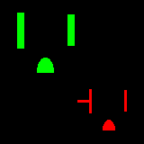
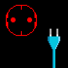

Electrical items from around the world
This is my collection of (mostly vintage) electrical items. Most of them are from Italy, because that's where I live, however there are also some items from other countries here as well.
If you want a brief overview of the (surprisingly complicated) Italian electrical system, click on the General information page!
General information:
 General information
General information
History:
 History of the Italian electrical system
History of the Italian electrical system
 Evolution of electrical safety
Evolution of electrical safety
Electrical items from Italy:
 Vintage rewireable plugs and sockets
Vintage rewireable plugs and sockets
 Vintage fixed sockets and lightswitches
Vintage fixed sockets and lightswitches
 Modern plugs and sockets
Modern plugs and sockets
 Vintage fuses and breakers
Vintage fuses and breakers
Items from other countries:
 North American electrical items
 European electrical items
Other pages:
 Other devices and unusual items
Other devices and unusual items
 Travel adaptors
Travel adaptors
Terminology
Browse pages by plug type:
- NEMA 1-15 and 5-15 - American style (Types A and B)
- CEE 7/1 and 7/2 - European unearthed style
- CEE 7/3 and 7/4 - German style (Type F)
- CEE 7/5 and 7/6 - French style (Type E)
- SN 441011 - Swiss style (Type J)
- CEI 33-50 - Italian style (Type L) (old plugs on a separate page)
Videos and Twitter threads:
- Old plugs, limited electrical supplies, and more [Twitter] [Thread Reader App]
- A brief history of the Swiss T14 plug [Twitter] [Thread Reader App]
- [VIDEO] Weird Old Plugs from Italy, and How They're Built
- [VIDEO] A Brief Look at Italian Modular Power Sockets
External resources:
- The excellent Museum of Plugs and Sockets
- Museum of Old Electrical Items (for UK electrical items)
- AC power plugs and sockets - Wikipedia
Thanks for visiting my website!